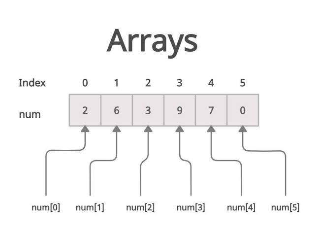
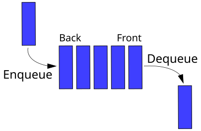
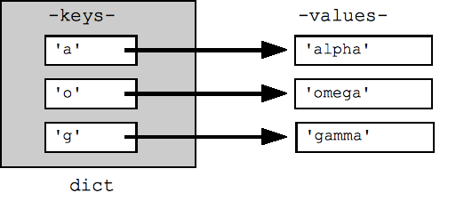
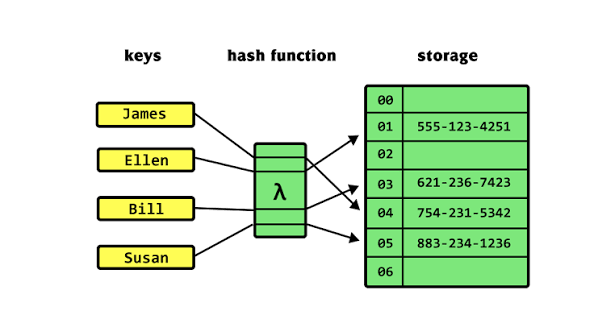
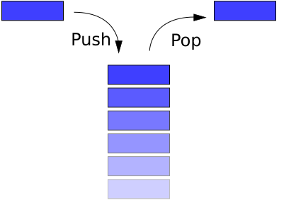
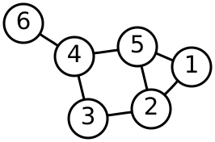

Arrays

Arrays store items in order and allow quick index-based lookup.
Access: O(1)
Data structures are ways to organize and store data so programs can access and update it efficiently.
Choosing the right data structure is key to writing fast, scalable software. Different structures trade off memory usage, lookup speed, and insertion or deletion costs depending on how your program reads and modifies information whether you need instant index access, first-in-first-out task flow, key-value lookups, or dynamic node links.

Arrays store items in order and allow quick index-based lookup.
Access: O(1)

Queues follow FIFO, making them useful for scheduling and task flow.
Enqueue/Dequeue: O(1)

Dictionaries map unique keys to values for direct lookups.
Lookup: O(1) average
Linked lists chain nodes together and support flexible insertions.
Insert at head: O(1)

Hash tables use hashing to store key-value pairs efficiently.
Search: O(1) average

Stacks are LIFO structures used for undo systems and call tracking.
Push/Pop: O(1)
Trees represent hierarchical data like folders, menus, and indexes.
Search: O(log n) balanced

Graphs connect nodes and edges to model routes and networks.
Traversal: O(V + E)